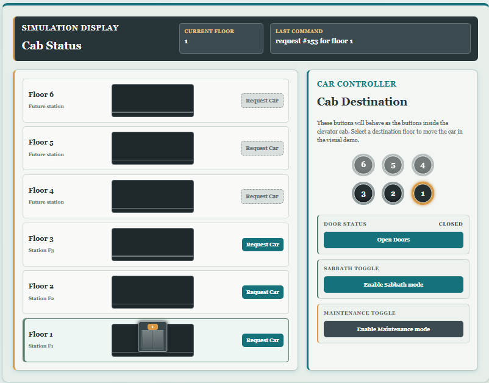
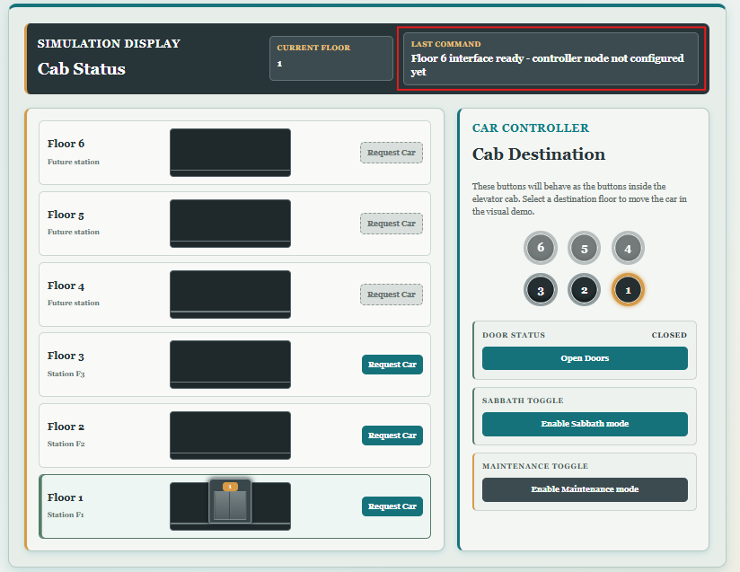
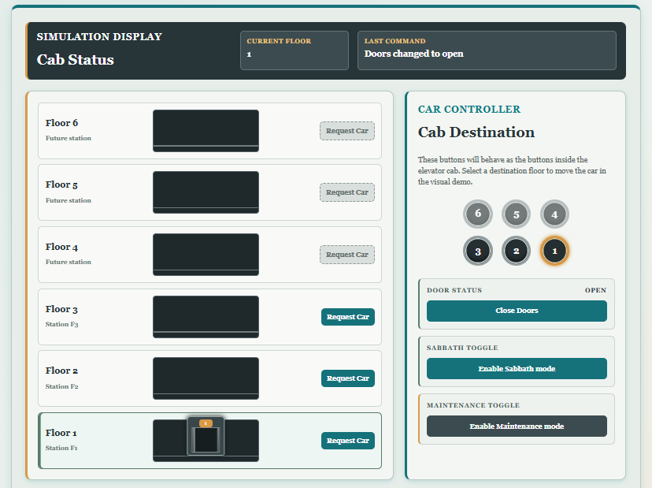
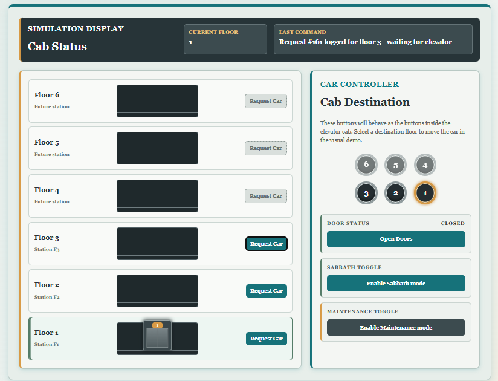
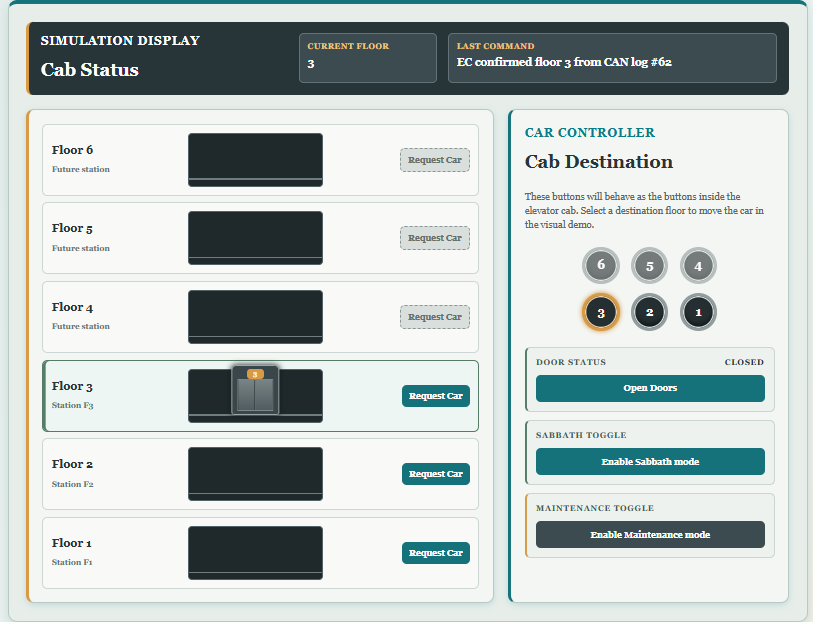
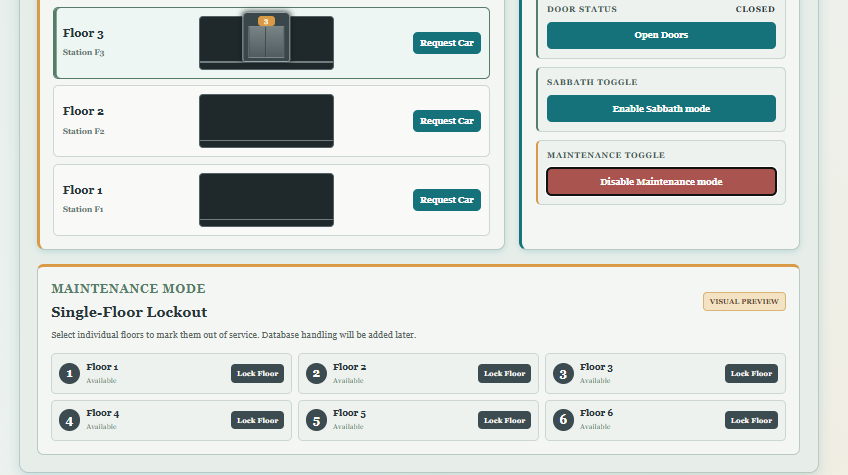
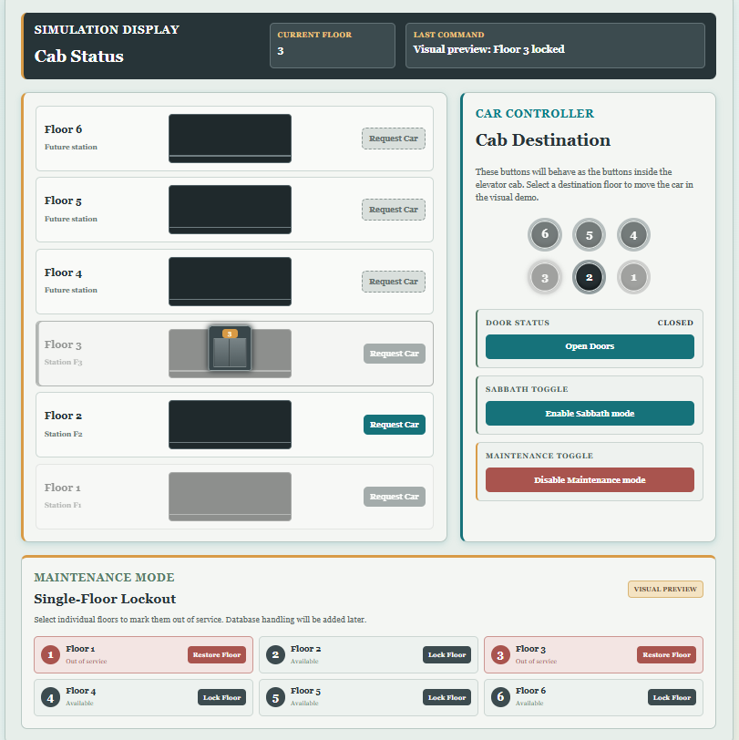
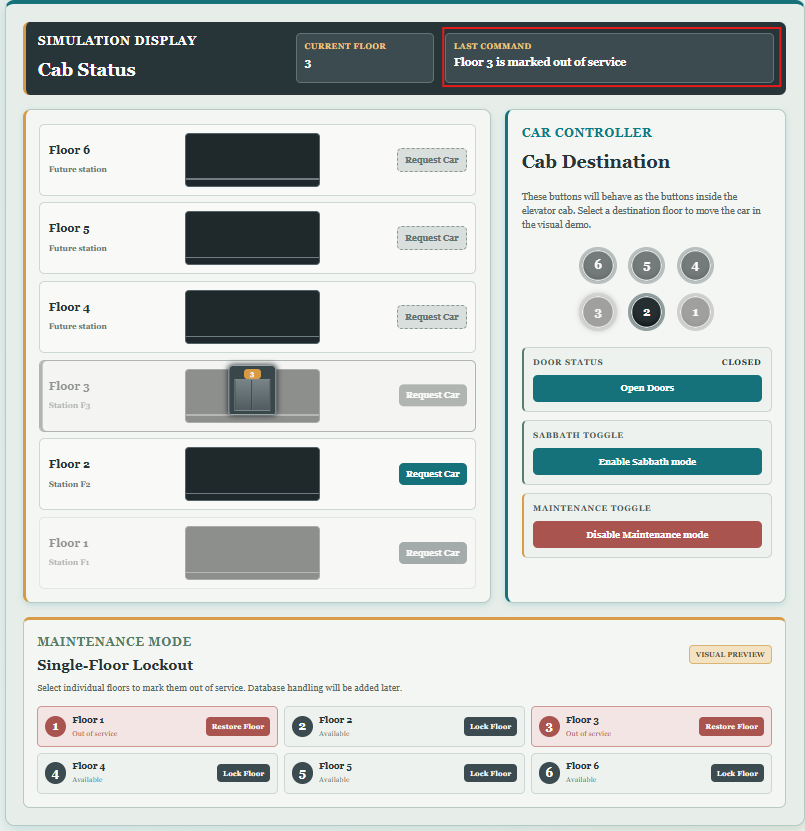

Main task or topic
After updating the PHP/HTML structure, I wrote the associated
elevator_control.css. The goal was to improve the
existing page without making it look like a completely different
website. I kept the original floor-card tower and right-side
controller, then used a darker elevator shaft, neutral surfaces, and a
small number of accent colours.
Central colour variables
The main colours are defined once at the top of the stylesheet:
:root {
--control-page-bg: #dce8e5;
--control-surface: #f4f6f3;
--control-panel: #e7eeea;
--control-row: #f9faf8;
--control-border: #b8c8c3;
--control-dark: #273438;
--control-slate: #3c4b4f;
--control-teal: #16727a;
--control-green: #557c68;
--control-amber: #d89a45;
--control-red: #a9544e;
}A CSS custom property is reused with var():
background-color: var(--control-dark);
This makes later colour changes easier. For example, changing
--control-teal updates the floor buttons, controller
accent, and several hover states without searching through the entire
file.
The page background uses a restrained gradient:
body {
background: linear-gradient(
135deg,
var(--control-page-bg),
#edf2ef 60%,
#f3ead8
);
}
135deg controls the direction. The 60% means
the second colour is reached around 60 percent of the way across the
gradient.
Main two-column grid
The elevator tower and car controller use CSS Grid:
.elevator-layout {
display: grid;
grid-template-columns:
minmax(0, 1.25fr)
minmax(280px, 0.75fr);
gap: 22px;
}Important terms:
-
display: gridturns the element into a grid container. grid-template-columnsdefines the column sizes.-
frmeans a fraction of the available space. The tower receives more space than the controller. -
minmax(minimum, maximum)gives a track a permitted size range. -
minmax(280px, 0.75fr)prevents the controller from becoming narrower than 280 pixels. -
gapcreates spacing between grid cells without adding margins to each child.
Six-floor tower
The tower is another grid:
.building-tower {
display: grid;
grid-template-rows: repeat(6, 108px);
gap: 10px;
}
repeat(6, 108px) is shorthand for six rows that are each
108 pixels high. This fixed height is also why the JavaScript elevator
positions are separated by 118 pixels: 108 pixels for one row plus the
10-pixel gap.
Each .floor-row has three columns:
grid-template-columns:
minmax(84px, 0.72fr)
minmax(145px, 200px)
minmax(98px, 0.78fr);These columns hold the floor label, shaft, and request button. The shaft is limited to between 145 and 200 pixels so the elevator car no longer floats inside an unnecessarily wide black rectangle.
The active floor receives an additional class from JavaScript:
.floor-row.active-floor {
background-color: #edf6f2;
border-color: var(--control-green);
box-shadow: inset 4px 0 var(--control-green);
}
inset draws the shadow inside the element, making it look
like a coloured status stripe.
Shaft and elevator car
The shaft is position: relative, which establishes the
positioning area for the absolute elevator car:
.shaft {
position: relative;
max-width: 200px;
height: 78px;
}
.elevator-car {
position: absolute;
left: 50%;
transform: translateX(-50%);
}
left: 50% moves the car's left edge to the centre.
translateX(-50%) then moves it left by half of its own
width, producing true horizontal centring.
The car's bottom value is changed by JavaScript. This CSS
rule smooths the movement:
transition: bottom 0.55s ease-in-out;
ease-in-out makes the animation begin and end more slowly
than the middle.
Sliding elevator doors
The HTML contains one .car-door span, but CSS creates two
visible panels using ::before and ::after:
.car-door::before,
.car-door::after {
content: "";
position: absolute;
width: 50%;
transition: transform 0.25s ease;
}
Pseudo-elements are CSS-generated pieces that do not require
additional HTML. ::before is the left panel and
::after is the right panel.
When JavaScript adds doors-open to the elevator car, the
two pieces move in opposite directions:
.elevator-car.doors-open .car-door::before {
transform: translateX(-82%);
}
.elevator-car.doors-open .car-door::after {
transform: translateX(82%);
}
The 0.25s transition prevents the doors from snapping
instantly between states.
Cab-button grid
The cab controls use a compact three-column grid:
.car-button-stack {
display: grid;
grid-template-columns: repeat(3, 56px);
gap: 14px 17px;
justify-content: center;
}
There are six buttons, so CSS automatically creates a second row. In a
two-value gap, the first number is vertical spacing and
the second is horizontal spacing.
Each button is made circular with border-radius: 50%. The
thick grey border, multiple inset shadows, and dark centre make it
resemble a physical elevator button. The active floor changes the ring
to amber, while future Floors 4 to 6 use reduced opacity.
Door and operating-mode controls
The door, Sabbath, and maintenance sections remain stacked:
.mode-control-stack {
display: grid;
gap: 12px;
}All three use the same basic spacing and border shape. Their colours communicate different meanings:
- Teal for normal interactive controls.
- Sage green for ordinary/available state accents.
- Amber for an active or attention state.
- Muted red for active maintenance or locked floors.
- Charcoal and slate for the elevator hardware and secondary controls.
The shared button transition animates background, colour, and a one-pixel upward hover movement.
Maintenance lockout states
The lockout section uses an attribute selector:
.floor-lockout-panel[hidden] {
display: none;
}
[hidden] means "only select this class when the HTML
element also has the hidden attribute." JavaScript can therefore show
or hide the entire panel by changing
floorLockoutPanel.hidden.
The floor cards use another grid:
.floor-lockout-grid {
grid-template-columns: repeat(3, minmax(0, 1fr));
}
This creates three equal flexible columns.
minmax(0, 1fr) allows each column to shrink below the
width of its content instead of forcing the page to overflow.
When JavaScript adds is-locked, CSS changes the
background, border, number circle, button, and status text to muted
red. The related tower row and cab button receive
floor-locked, which reduces opacity and applies
grayscale().
Responsive layouts
Media queries change the layout at smaller screen widths.
At 1000 pixels or below:
@media screen and (max-width: 1000px) {
.elevator-layout {
grid-template-columns: 1fr;
}
}The tower and controller become one vertical column. The cab buttons can temporarily fit into one row.
At 760 pixels, padding and floor columns become smaller, and the cab/lockout controls return to three columns. At 540 pixels, secondary floor labels and the preview badge are hidden, while the lockout cards become one column.
Reduced-motion support
The final media query respects the operating system's accessibility setting:
@media (prefers-reduced-motion: reduce) {
.elevator-car,
.car-door::before,
.car-door::after {
transition: none;
}
}If a user has requested reduced motion, the car and doors change state immediately.
Result
The CSS supplies nearly all of the new appearance while PHP continues
to generate the content and JavaScript continues to control state. The
most important CSS/JavaScript connection is class-based: JavaScript
adds classes such as active-floor,
doors-open, active, is-locked,
and floor-locked, and CSS decides how each state should
look.

Proof of Functionality
Attempting to go to a floor that's not yet implemented:

Open doors:

Floor request:

EC Confirming it:

Maintenance panel:

Locking out floors:

When locked out, requests to that floor denied:
